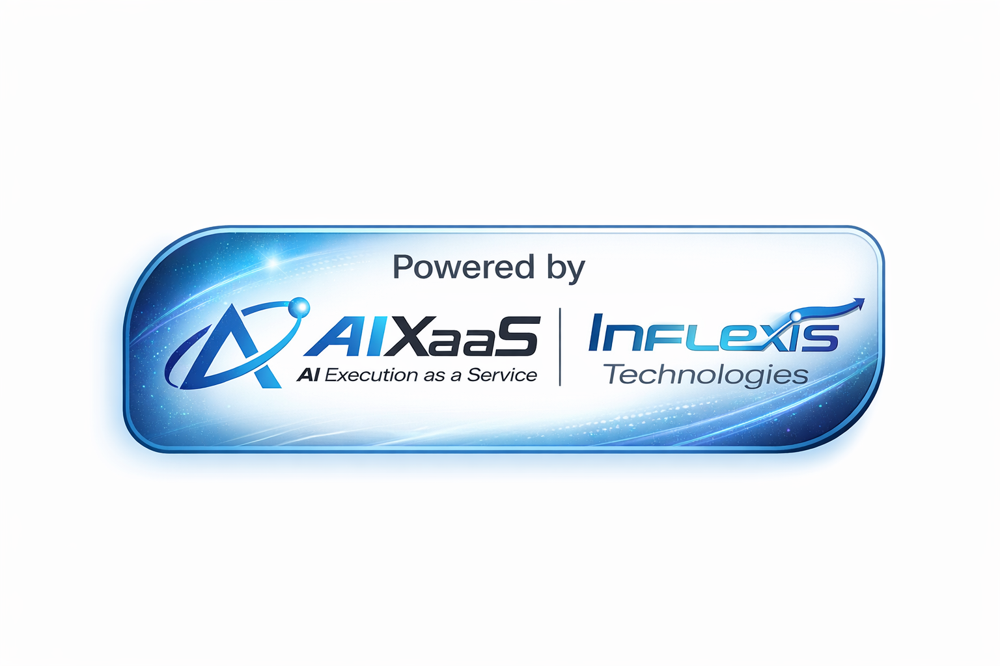

SPACE = play/pause | R = restart

AIXaaS Intelligence Platform
mike (founder) • Documents
Knowledge Domains
Foundation Demo
Documents
Structured Data
Compliance
Mike's Knowledge Base
ACP-Full-Core-Prod-KB
AI Compliance Platform • 897 chunks
EAR-Full-NO-Trade-Secrets
Export Admin Regulations • 1,249 chunks
Pattern Library
Compliance Gap Scan
AI Governance Review
Risk Assessment
Executive Summary
Active Domain:
Foundation Demo
Documents
Structured Data
Query Builder
NIST-CSF
ISO-27001
GDPR
HIPAA
SOX
Analyze
Response — Documents Namespace
Model:
claude-sonnet-4
Chunks:
0
/2,146
Owner:
mike
ADR-0087 logged
AI Navigator
Mike's sandbox is isolated to his two reference documents. All responses are grounded exclusively in ACP and EAR content.
Deep dive: NIST-CSF mapping
Compare ACP vs EAR requirements
Generate compliance gap report
Export findings to PDF
KB STATUS
Chunks
2,146
Sources
2 docs
Owner
mike
Mode
azure+keyword
Isolated
true